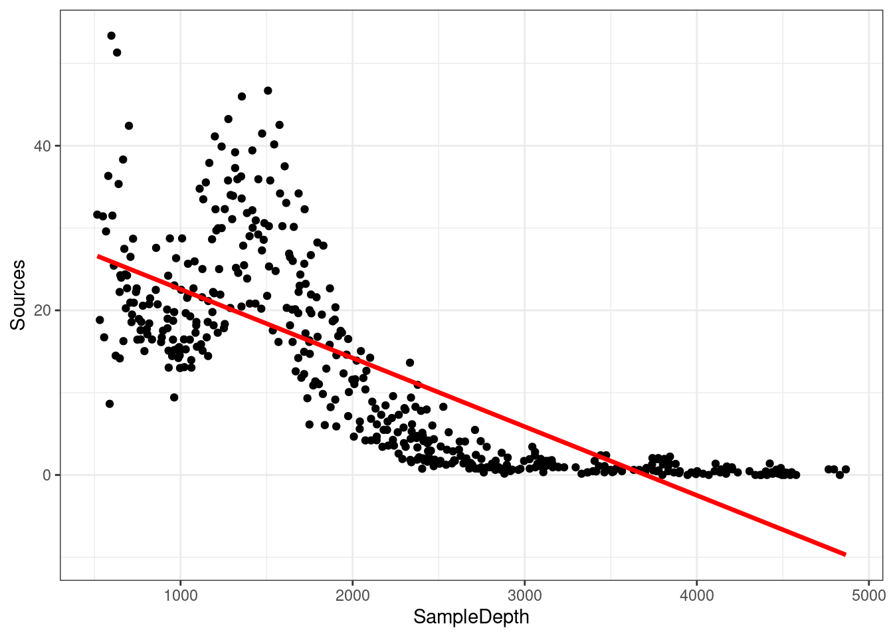

Chapter 4 Introduction to GAMs
Let us use an example to demonstrate the difference between a linear regression and an additive model.
First, we will load the ISIT dataset. This dataset is comprised of bioluminescence levels (Sources) in relation to depth, seasons and different stations.
## SampleDepth Sources Station Time Latitude Longitude Xkm Ykm Month Year
## 1 517 28.73 1 3 50.1508 -14.4792 -34.106 16.779 4 2001
## 2 582 27.90 1 3 50.1508 -14.4792 -34.106 16.779 4 2001
## 3 547 23.44 1 3 50.1508 -14.4792 -34.106 16.779 4 2001
## 4 614 18.33 1 3 50.1508 -14.4792 -34.106 16.779 4 2001
## 5 1068 12.38 1 3 50.1508 -14.4792 -34.106 16.779 4 2001
## 6 1005 11.23 1 3 50.1508 -14.4792 -34.106 16.779 4 2001
## BottomDepth Season Discovery RelativeDepth
## 1 3939 1 252 3422
## 2 3939 1 252 3357
## 3 3939 1 252 3392
## 4 3939 1 252 3325
## 5 3939 1 252 2871
## 6 3939 1 252 2934For now, we will be focusing on Season 2.
Let’s begin by trying to fit a linear regression model to the relationship between Sources and SampleDepth. We can use the gam() command from the mgcv package here to model an ordinary least squares regression. We will see below how to use gam() to specify a smoothed, non-linear term.
##
## Family: gaussian
## Link function: identity
##
## Formula:
## Sources ~ SampleDepth
##
## Parametric coefficients:
## Estimate Std. Error t value Pr(>|t|)
## (Intercept) 30.9021874 0.7963891 38.80 <2e-16 ***
## SampleDepth -0.0083450 0.0003283 -25.42 <2e-16 ***
## ---
## Signif. codes: 0 '***' 0.001 '**' 0.01 '*' 0.05 '.' 0.1 ' ' 1
##
##
## R-sq.(adj) = 0.588 Deviance explained = 58.9%
## GCV = 60.19 Scale est. = 59.924 n = 453The linear model is explaining quite a bit of variance in our dataset (\(R_{adj}\) = 0.588), which means it’s a pretty good model, right? Well, let’s take a look at how our model fits the data:
data_plot <- ggplot(data = isit2, aes(y = Sources, x = SampleDepth)) +
geom_point() + geom_line(aes(y = fitted(linear_model)), colour = "red",
size = 1.2) + theme_bw()
data_plot
Are the assumptions of linear regression listed in Chapter 2 met in this case? As you may have noticed, we are violating the assumptions of the linear model:
- There is a strong non-linear relationship between
SourcesandSampleDepth. - The error is not normally distributed.
- The variance of the error is not homoscedastic.
- The errors are not independent of each other.
As we mentioned briefly in Chapter 2, we could manually specify a linear model with multiple predictor variables to try to accommodate this non-linear response. For example, we could try to build this linear model with multiple predictors:
\[y_i = \beta_0 + \beta_1(x_{1,i}) + \beta_2(x_{2,i}) + ... + \epsilon\] However, the fit of this model would be determined manually based on the modeller’s decisions, and would quickly become difficult to work with. One big advantage of using an additive model, such as a GAM, is that the fitting method (usually maximum likelihood) automatically determines the optimal shape of the curve fit for non-linear responses. This optimal shape is, in other words, the degree of smoothness of \(f(x)\).
Briefly, GAMs are effectively a nonparametric form of regression where the \(\beta x_i\) of a linear regression is replaced by a smooth function of the explanatory variables, \(f(x_i)\), and the model becomes:
\[y_i = f(x_i) + \epsilon_i\] where \(y_i\) is the response variable, \(x_i\) is the predictor variable, and \(f\) is the smooth function.
Importantly, given that the smooth function \(f(x_i)\) is non-linear and local, the magnitude of the effect of the explanatory variable can vary over its range, depending on the relationship between the variable and the response.
That is, as opposed to one fixed coefficient \(\beta\), the function \(f\) can continually change over the range of \(x_i\).
The degree of smoothness (or wiggliness) of \(f\) is controlled using penalized regression determined automatically in mgcv using a generalized cross-validation (GCV) routine (Wood 2006).
We can try to build a more appropriate model by fitting the data with a smoothed (non-linear) term. In mgcv::gam(), smooth terms are specified by expressions of the form s(x), where \(x\) is the non-linear predictor variable we want to smooth. In this case, we want to apply a smooth function to SampleDepth.
##
## Family: gaussian
## Link function: identity
##
## Formula:
## Sources ~ s(SampleDepth)
##
## Parametric coefficients:
## Estimate Std. Error t value Pr(>|t|)
## (Intercept) 12.8937 0.2471 52.17 <2e-16 ***
## ---
## Signif. codes: 0 '***' 0.001 '**' 0.01 '*' 0.05 '.' 0.1 ' ' 1
##
## Approximate significance of smooth terms:
## edf Ref.df F p-value
## s(SampleDepth) 8.908 8.998 214.1 <2e-16 ***
## ---
## Signif. codes: 0 '***' 0.001 '**' 0.01 '*' 0.05 '.' 0.1 ' ' 1
##
## R-sq.(adj) = 0.81 Deviance explained = 81.4%
## GCV = 28.287 Scale est. = 27.669 n = 453The variance explained by our model has increased by more than 20% (\(R_{adj}\) = 0.81)! When we compare the fit of the linear (red) and non-linear (blue) models, it is clear that the latter is more appropriate for our dataset:
data_plot <- data_plot + geom_line(aes(y = fitted(gam_model)),
colour = "blue", size = 1.2)
data_plot
Recall: As opposed to one fixed coefficient \(\beta\) in a linear model, the function \(f\) can vary across the range of \(x_i\).
The mgcv package also includes a default plot to look at the smooths:

4.1 Test for linearity
How do we test whether the non-linear model offers a significant improvement over the linear model?
We can use gam() and AIC() to test whether an assumption of linearity is justified. To do so, we can compare the performance of a linear model containing x as a linear predictor to the performance of a non-linear model containing s(x) as a smooth predictor. In other words, we ask whether adding a smooth function to the linear model improves the fit of the model to our dataset.
linear_model <- gam(Sources ~ SampleDepth, data = isit2)
smooth_model <- gam(Sources ~ s(SampleDepth), data = isit2)
AIC(linear_model, smooth_model)## df AIC
## linear_model 3.00000 3143.720
## smooth_model 10.90825 2801.451Here, the AIC of the smooth GAM is lower, which indicates that adding a smoothing function improves model performance. Linearity is therefore not supported by our data.
As a brief explanation, the Akaike Information Criterion (AIC) is a comparative metric of model performance, where lower scores indicate that a model is performing “better” compared to other considered models.
4.2 Challenge 1
We will now try to determine whether this the data recorded in the first season should be modelled with a linear regression, or with an additive model. Let’s repeat the comparison test with gam() and AIC() using the data recorded in the first season only:
- Fit a linear and smoothed GAM model to the relation between
SampleDepthandSources. - Determine if linearity is justified for this data.
- How many effective degrees of freedom does the smoothed term have?
We have not discussed effective degrees of freedom (EDF) yet, but these are a key tool to help us interpret the fit of a GAM. Keep this term in mind. More on this in the next sections!
4.2.1 Challenge 1: Solution
1. Fit a linear and smoothed GAM model to the relation between SampleDepth and Sources.
linear_model_s1 <- gam(Sources ~ SampleDepth, data = isit1)
smooth_model_s1 <- gam(Sources ~ s(SampleDepth), data = isit1)2. Determine whether a linear model is appropriate for this data.
As before, visualizing the model fit on our dataset is an excellent first step to determine whether our model is performing well.
ggplot(isit1, aes(x = SampleDepth, y = Sources)) + geom_point() +
geom_line(colour = "red", size = 1.2, aes(y = fitted(linear_model_s1))) +
geom_line(colour = "blue", size = 1.2, aes(y = fitted(smooth_model_s1))) +
theme_bw()We can supplement this with a quantitative comparison of model performance using AIC().
## df AIC
## linear_model_s1 3.000000 2324.905
## smooth_model_s1 9.644938 2121.249The lower AIC score indicates that smooth model is performing better than the linear model, which confirms that linearity is not appropriate for our dataset.
3. How many effective degrees of freedom does the smoothed term have?
To get the effective degrees of freedom, we can simply print the model object:
##
## Family: gaussian
## Link function: identity
##
## Formula:
## Sources ~ s(SampleDepth)
##
## Estimated degrees of freedom:
## 7.64 total = 8.64
##
## GCV score: 32.13946The effective degrees of freedom (EDF) are >> 1. Keep this in mind, because we will be coming back to EDF soon!
References
Wood, S. N. 2006. Generalized Additive Models: An Introduction with R. 2nd ed. Chapman; Hall/CRC.